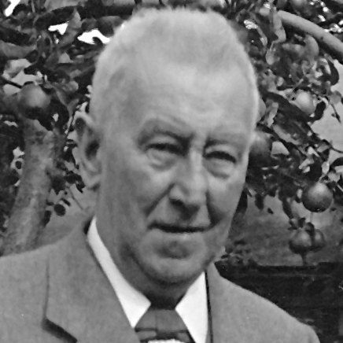
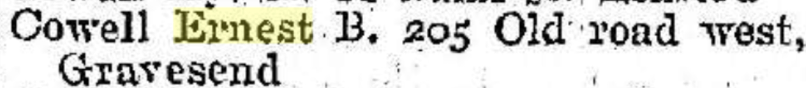

Ernest Benjamin Cowell 1883 - 1953
[ Home ] | [ Calendar ] | [ Surnames Index ] | [ Errors ] | [ Family History ]A mechanical engineering draughtsman and insurance agent and the child of Benjamin Cowell (a woollen warehouse foreman) and Agnes Jacobs, Ernest Cowell, the third cousin twice-removed on the mother's side of Nigel Horne, was born in Chatham, Kent, England on 9 Jul 18831,2,3,4,5 and was married twice - to Ethel Steddy (in 1907 in Medway, Kent, England) Mabel Heath (c. May 1939 in Strood, Kent, England, following the death of Ethel Maud c. Nov 1937)7. He had 1 child with Ethel Steddy, Ernest Frederick William.
During his life, he was living at 5 Hope Street in Chatham on 5 Apr 189115 and on 31 Mar 190114; at 1 Campbell Road, Gravesend, Kent on 2 Apr 19111; and at 205 Old Road West, Gravesend, Kent in 193813, on 29 Sept 193916 and in 195312.
He died on 6 Sept 1953 at Joyce Green Hospital, Dartford, Kent3,6 and was buried at Municipal Cemetery, Gravesend, Kent on 11 Sept 1953 (an overcast day)8,9,10,11.
Parents
- Benjamin William was born c. Nov 1858
- Agnes Sarah was born in 1860
Children
- Ernest Frederick William was born on 24 Apr 1908
Citations
- 1911 Census for England & Wales - Findmypast (was age 27 and the head of the household)
- England & Wales births 1837-2006 - Findmypast
- England & Wales deaths 1837-2007 - Findmypast
- Kent Burials - Findmypast
- National Burial Index For England & Wales - Findmypast
- England & Wales Government Probate Death Index 1858-2019 - Findmypast
- England & Wales, FreeBMD Marriage Index: 1837-1915 Online publication - Provo, UT, USA: The Generations Network, Inc., 2006.Original data - General Register Office. England and Wales Civil Registration Indexes. London, England: General Register Office. © Crown copyright. Published by permission of the Cont
- North West Kent Burials Transcription
- Kent Burials - Findmypast
- National Burial Index For England & Wales - Findmypast
- National Burial Index For England & Wales - Findmypast
- From his probate
- 1938 Kelly's Kent Directory
- 1901 England, Wales & Scotland Census - Findmypast (was age 17 and the son of the head of the household)
- 1891 England, Wales & Scotland Census - Findmypast (was age 7 and the son of the head of the household)
- 1939 Register - Findmypast (was the head of the household)
Media
Ernest Benjamin Cowell

Ernest Benjamin Cowell - probate

Kelly's Directory - 1938

1911 Census for England & Wales - GBC/1911/RG14/03831/0641/1
1901 England, Wales & Scotland Census - GBC/1901/0005768563
England & Wales deaths 1837-2007 - BMD/D/1953/3/AZ/000169/043
1891 England, Wales & Scotland Census - GBC/1891/0005444123
England & Wales marriages 1837-2005 - BMD/M/1939/2/AZ/000306/057
1939 Register - TNA/R39/1736/1736E/004/14
North West Kent Burials Transcription - GBPRS-D-28076841
England & Wales marriages 1837-2005 Transcription - BMD-M-1907-2-AZ-000082-107
Kent Burials - GBPRS-D-28076842
England & Wales births 1837-2006 - BMD/B/1883/3/AZ/000121/230
England & Wales Government Probate Death Index 1858-2019 - GBOR/GOVPROBATE/C/1953-1953/00045627
National Burial Index for England & Wales - BMD/NBI/209/00247250
National Burial Index for England & Wales - BMD/NBI/209/00247450
Family Tree

Map
Generated by ged2site. Last updated on Jul 3, 2024